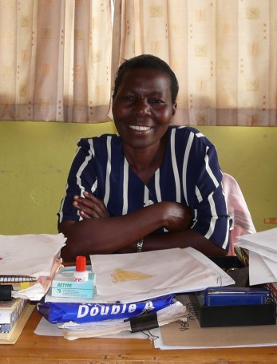
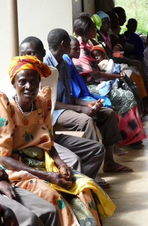
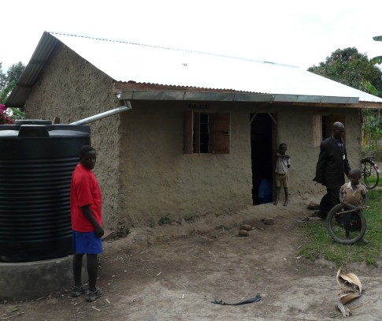
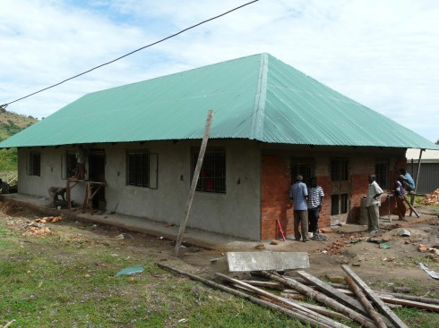

April 2009
Bram Moolenaar, penningmeester van ICCF Holland, bezocht het Kibaale
Children's Centre in april 2009. Dit is zijn verslag.
Klik op de foto's hieronder om een grotere versie te zien.
Veel meer foto's zijn te vinden op
Picasa.
Kibaale georganiseerd
Ik heb Kibaale al zo vaak bezocht dat ik gestopt ben met tellen.
En toch ziet het er elke keer beter uit.
Het eerste wat me deze keer opvalt is een andere kleur.
Veel gebouwen zijn gerepareerd en geverfd.
Het valt te verwachten dat reparaties nodig zijn na jaren van regen, zon,
insecten en wind.
De muren zijn gepleisterd, dus na het vullen van gaten en het vervangen van
raamkozijnen moet er geverfd worden.
Bruin is de overheersende kleur.
Dat staat goed bij het groen van het gras en de bomen.
En het is praktisch, het wordt niet zo snel vies van modder na een stortbui.
Toen het project van start ging was er niet veel geld.
Een paar dollars besparen was belangrijker als kwaliteit.
Nu het duidelijk is dat het centrum succesvol is en lange tijd zal
functioneren is kwaliteit belangrijker geworden.
Een kleine investering kan een flinke besparing in onderhoud opleveren.
Het is duidelijk dat vandaag de dag alles goed geregeld is.
Niet dat het allemaal zonder problemen loopt, maar er is altijd iemand die het
oplost.
Gisteravond liep de generator niet goed en stopte.
Het zonne-energie systeem krijg in het regen seizoen niet genoeg licht om de
accu's helemaal te vullen.
Binnen een paar minuten komt er een monteur met zijn gereedschap opdagen en
een paar uur later is het probleem verholpen.
|
|
|

Kinderen in de kleuter klas.
|

Rose zorgt voor de jonge kinderen.
|
|
|
Personeel
Lopend over het project zie ik veel bekende gezichten.
De Ugandese leiding is onveranderd.
Ze werken hier al tot 15 jaar, dit zijn mensen die we vertrouwen.
Peter is het schoolhoofd. Hij zorgt er voor dat we goede leraren hebben, dat we
gekwalificeerd zijn om examens af te nemen en doet veel papierwerk.
Patrick doet wat ze onderhoud noemen.
Het is eigenlijk veel meer als dat, hij regelt ook de bouw, brengt water naar
de keuken en alles wat niet in een andere afdeling past.
Cephas is hoofd van het KCF, zij zorgen voor de kinderen.
Dat omvat ook speciale cadeaus, wat varieert van het kopen van passende
schoenen tot het bouwen van een huis voor een arm gezin.
Het is een heel werk om dit allemaal te managen.
In totaal zijn er nu 130 personeelsleden op het project.
Veel hiervan zijn naar Kibaale verhuisd van verder weg en we zorgen ook voor
hun onderkomen.
En sommigen brengen een familie mee, met als resultaat dat de groep
gebouwen voor het personeel er uit begint te zien als een klein drop.
Het nieuwste blok huizen is een maand terug in gebruik genomen.
Het staat wat hoger en heeft een prachtig uitzicht.
De Canadese vrijwilligers op het project zijn allemaal nieuw,
ik heb ze nog niet eerder ontmoet.
Jeff, Shannon, Rachel, Sean and Jamie helpen enthousiast de Ugandezen hun werk
te doen.
Karl en Arleen zijn ook nog in de buurt, ze zijn naar Masaka verhuisd om de
bouw van het nieuwe Timothy center te begeleiden. Verderop meer daarover.
Andere keren als ik aankwam kreeg ik direct een lijstje met klusjes.
Deuren die niet goed sluiten, computers die slecht werken, water pompen die
aangesloten moeten worden.
Deze keer kreeg ik de sleutel van een mooi huis (nou ja, voor Kibaale
begrippen), fris geverfd en klaar voor gebruik.
Ik moest nog wel een raam repareren, daar was wat te veel verf op gekomen.
|
Kliniek
In 2008 is de nieuwe kliniek geopend door Janet Museveni.
Ik ging er de eerste dag van mijn bezoek kijken en was gelijk onder de indruk.
Er zijn meer als twee keer zoveel kamers als voorheen, en ze zijn allemaal in
gebruik.
In twee ervan lagen patiënten aan een infuus.
Dit wordt gebruikt om extra sterkte te geven aan degenen die verzwakt zijn
door ziekte, vaak malaria.
In het laboratorium wordt bloed afgenomen van een man voor een HIV test.
Als hij later de resultaten krijgt is er een sociaal werker die hem opvangt
voor het geval het resultaat positief is.
Een dozijn anderen zit te wachten voor een laboratorium test.
Het personeel is uitgebreid tot elf. Grotendeels verplegers, maar ook
helpers, een receptionist, een apotheker en een lab technicus.
Het laboratorium is verbeterd, er staan meer instrumenten om testen
uit te voeren.
Maar het ziet er nog steeds redelijk primitief uit.
Een apart gebouw wordt elke morgen gebruikt om voorlichting te geven.
Het nadeel van een goed lopende kliniek is dat de kosten om het draaiende te
houden over de afgelopen jaren verdrievoudigd is.
Meer patiënten en ook complexere gevallen.
De beste kliniek in de omgeving zijn heeft zijn prijs!
Daarom zullen we op zoek gaan om sponsors om een deel van deze
kosten te dragen en daarmee de kliniek draaiende te houden.
|
|
|

Patienten wachten in de kliniek.
|

Een sponsor heeft de familie van Daniel geholpen met een nieuw huis.
Het heeft ook een watertank.
Gemaakt van takken en klei, ze hebben geen geld voor bakstenen en cement.
|
|
|
Kinderen
Een belangrijk doel van mijn bezoek is om kinderen thuis op te zoeken en te
zien hoe het met ze gaat.
Bij het zien van de mooie gebouwen op het centrum is het makkelijk te vergeten
dat de meeste families in een hut van klei wonen.
En elke familie heeft zijn problemen, dat is waarom we ze helpen.
Het kind dat ik zelf sponsor, Geofry Kyomya, woont nog steeds in hetzelfde
kleine huisje.
Ze wonen er met drie broers, de ouders zijn gestorven en de grootmoeder die
voor ze zorgde is nu te zwak en is elders onder gebracht.
De oudste jongen leidt het gezin, er is geen andere optie.
Ze hebben nu een redelijke tuin, daarmee kunnen ze genoeg voedsel verbouwen
voor eigen gebruik.
En dat is alles.
Voor alles wat geld kost, zoals het dak repareren, hebben ze extra hulp nodig.
Andere families die ik opzoek zijn in een vergelijkbare situatie.
Ze zijn arm en worstelen om rond te komen.
De enige mogelijkheid voor verbetering is dat een van de kinderen een goede
opleiding krijgt en een baan vindt of een zaak begint.
De laatste dag van mijn bezoek ontmoette ik Namate Rose. Na vele jaren
gesponsord te zijn werkt ze nu als lerares. Ze betaalt hiermee de studie van
haar zus en heeft haar moeder geholpen met de renovatie van hun huis.
Ze laat hiermee zien dat op lange termijn de mensen in Kibaale voor zichzelf
kunnen zorgen. Maar helaas is Rose nog een uitzondering.
|
School
Ik zie wat veranderingen, maar grotendeels is de school als voorheen en draait
goed.
De kleuterschool heeft de jongste groep opgesplitst in drie klassen, zodat elk
kind meer aandacht krijgt.
De klas voor gehandicapten is gesplitst in een jongere en oudere groep.
Deze dove en anders gehandicapte kinderen hebben veel hulp en specifieke
lessen nodig.
Dit is nergens anders in het district beschikbaar.
De middelbare school en beroepsopleiding zijn wat verbeterd, maar er zijn geen
grote veranderingen.
Het is fantastisch dat bijna alle kinderen in school nu een sponsor hebben.
Niet alleen zorgt dit voor een gezonde financiële situatie, het betekent ook
dat de kinderen een contact hebben in de westerse wereld.
Ze kijken er naar uit om sponsor te schrijven.
Helaas horen ze vaak niets terug.
Ik zal de sponsors vragen om vaker te schrijven.
Een simpele brief betekent al veel voor een kind.
Een foto wordt als een trofee aan de muur gehangen!
|
|
|

Het nieuwe computer klaslokaal is bijna klaar.
|

Ray en Jeff passen de plannen voor het Timothy Center aan.
|
|
|
Timothy center
Een van de problemen waar we mee worstelen is de scholing van oudere kinderen.
Nadat ze de middelbare school op het project af hebben moeten we een goede
vervolg opleiding voor ze vinden. Dat is vaak moeilijk en de kosten zijn
hoog.
Daarom is een plan ontstaan om dit te verbeteren door onze eigen school te
beginnen.
Ik heb het terrein bezocht samen met Ray Sutton, een van de grondleggers en
visionairs van het Kibaale center.
Hij liet me bouwplannen zijn, maar begint vervolgens gebouwen te verschuiven
als we over het terrein lopen.
Een van de doelen is om de gebouwen zo te plaatsen dat we geen boom hoeven om
te hakken.
Er staat een oude jackfruit boom met vele grote vruchten.
Die willen we zeker behouden.
De school wordt een kostschool, dus er moeten ook slaapzalen gebouwd worden,
een keuken, eetzaal en nog veel meer. En dit zijn geen kleine kinderen maar
tieners die meer ruimte nodig hebben.
Het plan is om dit jaar te bouwen en volgend daar met de eerste klas te
starten.
Ik kijk er naar uit om dit te zien ontstaan.
|
Boerderij
Een deel van het geld voor het project wordt gegenereerd met projecten.
Maar niet veel.
We hebben over de jaren diverse alternatieven uitgeprobeerd.
Recentelijk is dit gereduceerd tot de drie meest succesvolle: Kippen, koeien en
bomen.
Ik heb de 1100 kippen gezien (nee, ik heb ze niet nageteld!).
De helft is volgroeid en produceert eieren, de andere helft is nog jong en zal
over een paar maanden volwassen zijn.
De eieren worden in de omgeving verkocht en de kosten zijn voorspelbaar.
Dit blijkt goed te werken.
Kopen en verkopen van koeien is ook succesvol gebleken.
We kopen ze jong.
Voor een tijd produceren ze melk of een kalf.
Later worden ze weer verkocht en we blijken daar een aardige winst
op te maken.
We gebruiken hiervoor zwart-witte koeien, niet de locale soort.
Dat is een experiment en daarmee leren we ook de boeren wat het beste werkt.
Bomen verbouwen is een lange termijn project. We hebben pijnbomen geplant op
een stuk land dat niet gebruikt werd.
Het zal 12 tot 15 jaar duren voordat ze groot zijn.
Dan hopen we ze te verkopen voor 250 dollar per stuk.
Dat is duizend keer zoveel als de investering.
Maar een aantal zullen dood gaan, we zien later pas wat we over houden.
Groot voordeel is natuurlijk wel dat de investering erg klein is en het weinig
werk kost.
|
|
|

Met koeien wordt inkomen gegenereerd.
|

De nieuwe waterpomp in Kibaale.
|
|
|
Gemeenschaps werk
We helpen niet alleen specifieke families maar we proberen ook verbetering te
doen voor alle bewoners in het gebied.
Water was een groot probleem drie jaar terug, toen er een grote droogte was.
Zelfs de rivier, de belangrijkste waterbron voor het dorp, was droog gevallen.
Om te voorkomen dat dit nog een keer gebeurt hebben we een put geslagen.
Het is gelegen tussen de rivier en het dorp en het levert goed water op.
Dat ligt niet zo voor de hand, veel putten in de omgeving leveren water met te
veel ijzer, wat niet bruikbaar is.
We zijn erg gelukkig dat deze investering een succes is.
Een put slaan is erg duur, maar zodra de pomp werkt kost het maar een klein
beetje onderhoud om vele jaren schoon water te leveren.
Het programma voor kleine leningen is verder uitgebreid.
Door de financiële crisis rekenen banken een erg hoge rente.
Wij rekenen een lage rente en accepteren leningen met een hoog risico.
Dit is een belangrijke steun voor groepen vrouwen en studenten die na hun
opleiding een zaak willen beginnen.
Als ik door het dorp loop valt het me op dat de algemene situatie verbeterd
is.
Er zijn meer winkels en ze zijn meer gespecialiseerd.
In het verleden verkochten ze de essentiële zaken, zoals rijst, petroleum en
zout.
Ik zag nu een winkel die allerlei zaken voor het verbouwen van groente
verkoopt, zoals kunstmest, sproeiers en insecticiden.
Dit is een goede indicatie dat de landbouw verbeterd, wat erg belangrijk
is in dit landelijk gebied.
|
Conclusie
Na mijn vorige bezoek meldde ik dat er gestage voortgang is.
Het is goed te zien dat zich dit heeft voortgezet.
En alles ziet er goed georganiseerd uit, wat een teken is dat het de komende
jaren zo door zal gaan.
Maar we moeten niet vergeten dat er nog vele weeskinderen en families zijn die
niet zonder onze hulp kunnen.
En de drukke kliniek is een indicatie dat we nog meer moeten doen aan
voorlichting en de hygiëne moeten verbeteren.
Bram Moolenaar
veel meer foto's op Picasa
top
|


{kind=link}
{kind=link}
{kind=link}
{kind=link}